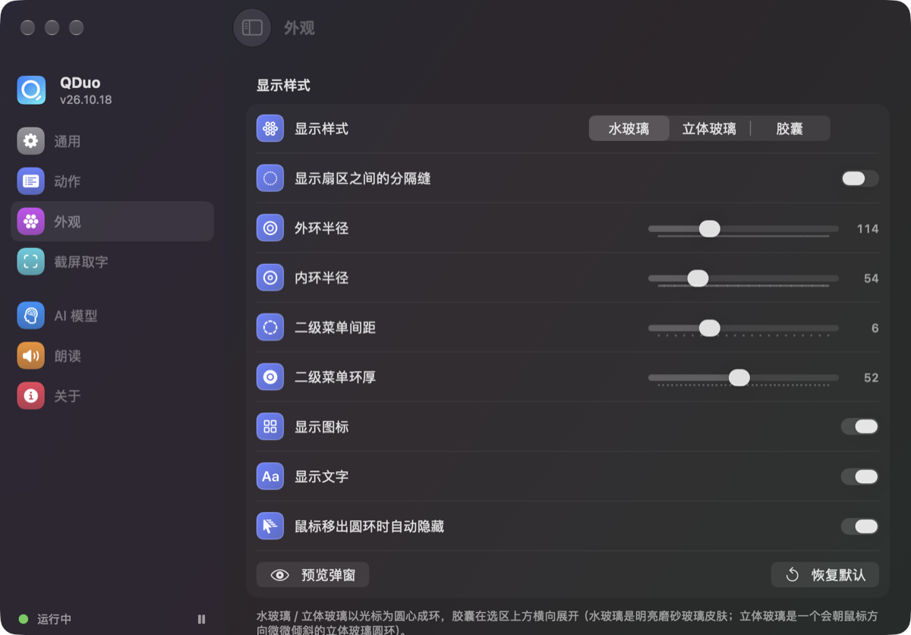

正方形里画的是按默认尺寸缩放的弹窗示意（外环 114、内环 54、7 个默认动作），背景都只用「线性渐变 + 几团模糊的圆形色块」组成，App 在 macOS 13 上就能用代码原样画出来，不用图片文件。鼠标移上去：扇区会高亮，立体玻璃会跟着倾斜。
你现在看到的那种「选中的像一个按钮」，就是 macOS 系统自带的分段控件（SwiftUI 的 .segmented）。macOS 26 以后系统把它改成了这种样子：选中的那一段是一块浮起来的浅色圆角块。下面是能换的几种，绿色标签 = 系统组件或系统组件的官方选项，橙色标签 = 需要我们自己画。底下的正方形都用第一种背景「极光」。
